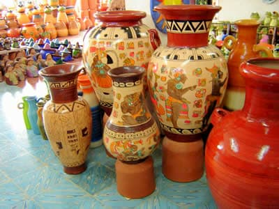
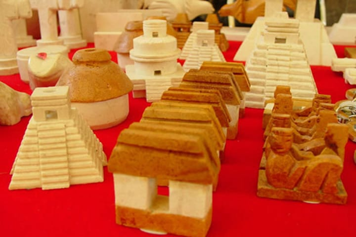
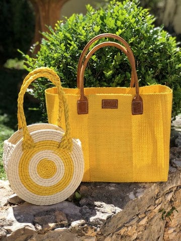
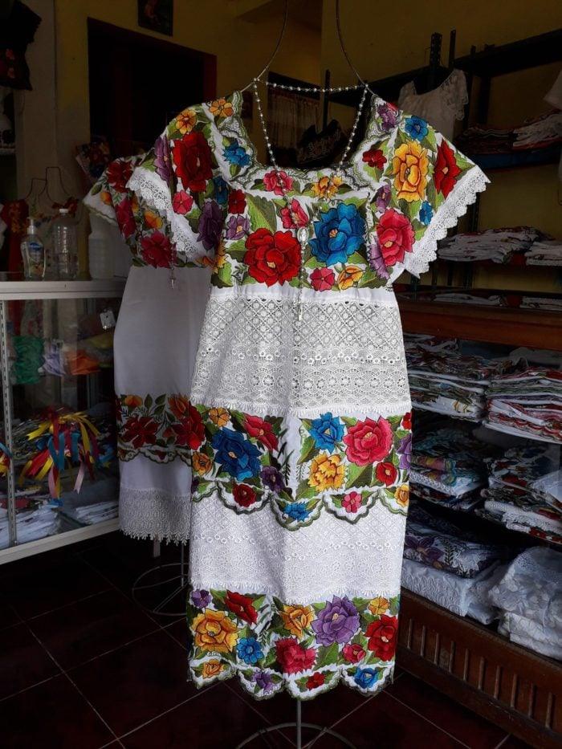
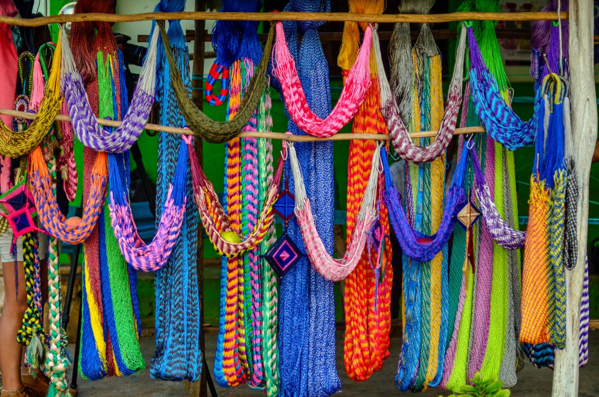
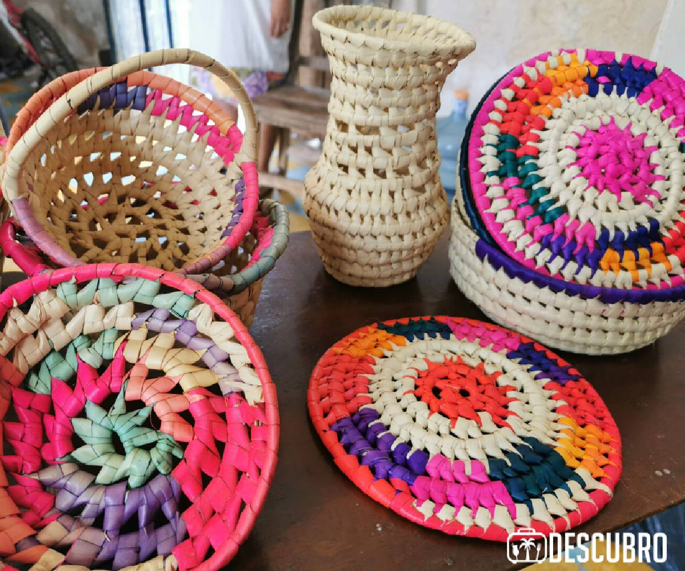
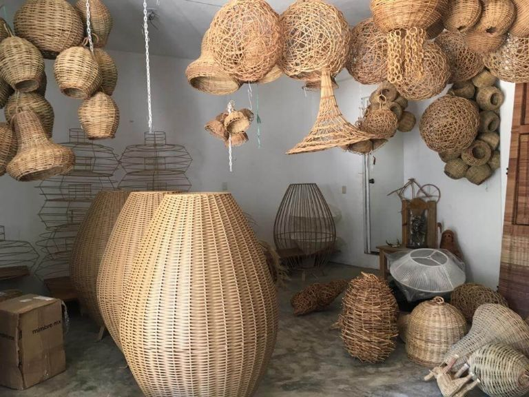
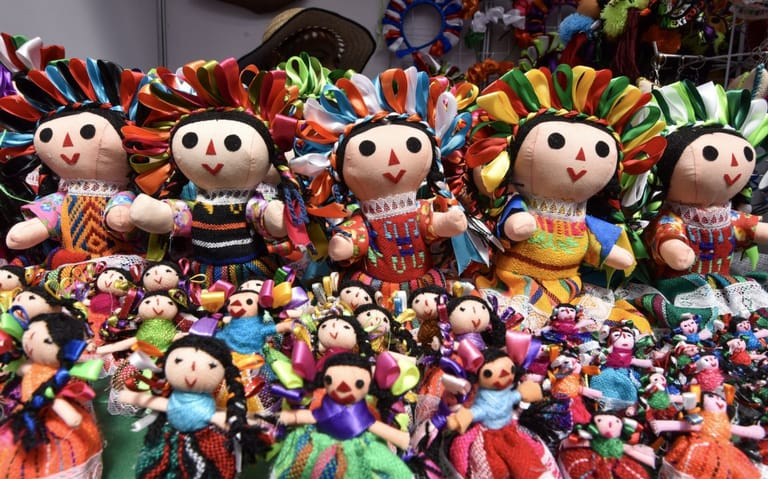

ARTESANIAS
En todo Yucatán se elaboran
artículos de los más diversos materiales, diseños y colores, que además
de ser útiles, aportan belleza y elegancia a nuestro entorno: joyería
de filigrana en oro y plata; artefactos de carey, concha, caracol,
madera y piedra tallada; vasijas de barro; instrumentos musicales;
tejidos de fibra de henequén y de algodón; bordados, aplicaciones de
encaje, calados, y punto de cruz; ternos, guayaberas y hamacas;
sombreros de paja y de palma del jipi; petates de junco y bejuco;
bolsas y zapatos de piel.
Existen otras ramas artesanales de
incipiente generación que también nos dan muestra del gran talento
artesanal de Yucatán. Destacan la pintura popular, juguetería,
reciclado y la herrería, que formó parte de la grandeza de las
edificaciones antiguas. La elaboración de objetos de papel y hoja de
elote son actividades en pleno desarrollo.

Alfarería
La alfarería comienza su desarrollo en
Yucatán durante el inicio de la cultura maya alrededor de 1200 a.C. Su
elaboración es mediante el modelado directo del barro (una mezcla de
agua, barro y arena especial llamada sac-cab “tierra blanca”) con los
dedos hasta lograr crear "mágicamente" cualquier forma deseada por el
artesano.
Para la elaboración de las piezas se
emplea un torno o k’abal, que consiste en una pequeña tabla rectangular
sobre la que se coloca el barro asentada sobre un disco que se controla
con los pies, para hacerla girar. Después las piezas se dejan secar, se
pulen y se colorean antes de introducirlas para su cocción en un horno
de barro, piedras y leña. Originalmente se fabricaban objetos de uso
cotidiano, recipientes para comer, cocinar, para almacenar agua, etc.
También se elaboraban objetos ceremoniales y representaciones de
dioses. Actualmente se fabrican objetos decorativos, principalmente
maceteros y jarrones. Algunos alfareros producen objetos especiales
para las fiestas sobre todo para las celebraciones de los santos
difuntos o Hanal Pixan. El lugar que destaca por su producción en
alfarería es Ticul.

Madera
En Yucatán, el tallado en madera es
una actividad que se remonta a la época prehispánica, pues los antiguos
mayas trabajaban la madera para proveerse de instrumentos de trabajo,
musicales, objetos ceremoniales y mobiliario. Es posible que con la
llegada de los españoles la habilidad de los mayas para trabajar la
madera fuese aprovechada por algunos frailes para la elaboración de
imágenes religiosas y retablos de iglesias. Fueron los frailes quienes
enseñaron a los indígenas nuevos diseños y técnicas para un mejor
desempeño del trabajo con madera.
En nuestros días, podemos decir que el
tallado de madera aún persiste, se realiza de manera artesanal con
fines comerciales en tres grandes áreas: el sur, el poniente y el
oriente de Yucatán. En el área sur se incluye la villa de Muna y
localidades aledañas a los sitios arqueológicos que comprenden la Ruta
Puuc; en el poniente está Dzityá que es comisaría de la ciudad de
Mérida; y en el oriente, se encuentra Pisté, Popolá, Cuncunul,
Tixhualahtún y Chemáx. Se tallan aves y mamíferos característicos de la
zona, aunque también se elabora otro tipo de animales como elefantes y
tucanes.
La materia prima para esta actividad
es la madera de cedro, ya sea éste rojo o blanco, así como las raíces
jóvenes del pich o guanacastle. Otra materia prima importante es el
guayacán y el chaká.

Henequén
Desde los tiempos prehispánicos el
indio yucateco con la fibra extraíada del henequén fabricaba y tejía
una gran variedad de objetos de uso personal: cordeles, sogas, bolsas o
morrales y esteras para sus lechos. Hoy se emplea también en una vasta
gama de objetos, como telas, cestos, manteles, tapetes, hamacas,
sombreros para damas, bolsas de mano, pantuflas, cigarreras, monederos,
carpetas con motivos artísticos en preciosos colores y otros objetos
primorosamente raros y de paciente labor, muy estimados por los
turistas extranjeros.

Textil bordado
En Yucatán una de las más importantes
artesanías del estado es el bordado. En la época de la colonia se
elaboraban mantas tejidas por las indígenas, que eran confeccionadas
utilizando la técnica del telar de cintura; sin embargo las cuotas
impuestas por parte de los conquistadores de sobre explotación hicieron
que esta técnica desapareciera, generando un mestizaje de técnicas,
materiales, decoración, destacándose el bordado entre otros elementos
que dieron lugar al surgimiento del tradicional hipil, el cual es una
fusión entre la vestimenta utilizada por las mujeres mayas y los
ropajes impuestos por los españolas y que hoy en día continúa siendo la
vestimenta cotidiana de gran parte de la población yucateca.
El xokbil-chuy (hilo contado) o punto
de cruz es una labor que no requiere gran arte, sino paciencia, porque
la bordadora va contando tres o cuatro hilos de la trama de algodón y
cose una pequeña cruz de hilo de color, y así, fijando hileras de
cruces, forma el dibujo. Se bordan guías de flores entre verdes hojas
con los que se adornan los escotes cuadrados de los hipiles y los
bordes de todo el traje.
El calado o deshilado (xmanikté)
consiste en tirar de algunos hilos de la trama del lienzo, combinando
dibujos de forma cuadrangular, hasta confeccionar artísticos calados en
la tela. Con esta labor parecida al encaje y armonizada con embutidos y
randas, se forman preciosas labores para hipiles, mantillas, tocas y
tapetes. Se fabrican también corporales y ornamentos para las iglesias.
Una prenda muy utilizada por los
hombres, es la típica y elegante "guayabera", la cual es confeccionada
con diversos materiales, como lino, algodón, poliéster y combinaciones
de telas, sin embargo, las hechas de lino y algodón son las que
alcanzan mayor calidad. Hay variedad de diseños, como el tipo filipina,
con cuatro o dos bolsas alforzadas al frente, o bordadas.
Hacia fines del siglo XIX esta prenda
era usada por los yucatecos de clase alta, quienes la traían
directamente desde Cuba donde se elaboraba; sin embargo, al aumentar la
demanda, un grupo de visionarios yucatecos decidió fabricarla aquí.

Hamacas
La hamaca es una red colgante entre
dos muros que sirve para dormir. Los antiguos mayas dormían en petates
(poóp) que se colocaban sobre una cama de palos o varas. Los
conquistadores por primera vez encontraron hamacas en las Antillas, y
su uso y elaboración, por el tipo de clima del sureste, se fue
difundiendo; así, aunque la hamaca no sea originaria del estado de
Yucatán, su elaboración y uso ya tiene más de cuatro siglos, y es
gracias a la destreza de los artesanos de esta región que ha llegado a
su mejor desarrollo y elaboración.
Los municipios en donde se elaboran la
mayoría de las hamacas son Tixkokob, Chumayel y Teabo. La elaboración
de una hamaca es todo un arte, el cual se transmite de generación en
generación. Se urde la hamaca en un bastidor que consta de dos largos
palos de madera, cilíndricos y perpendiculares, colocados paralelamente
uno enfrente del otro, que se rodean en forma de madeja con el hilo que
se va a utilizar para el tejido, y con una aguja labrada en madera o
hueso comienza la tejedora a entrecruzar los hilos y poco a poco se va
formando la trama de malla característica.
Se elaboran hamacas de diferentes
clases, entre ellas la de mecate corriente de cordeles de henequén que
usan los indios, la de hilo fino de henequén, que es la hamaca estándar
de Yucatán, y la de hilera de algodón o de lino, que es la más fina.

Palma
La palma de huano crece prácticamente
en todo Yucatán. Tradicionalmente se usa para techar las casas mayas.
Las hojas usadas para la fabricación de artesanías tiene un elaborado
proceso en el que una parte se tiene que realizar en cuevas bajo la
tierra para que la humedad que ahí prevalece permita la ductibilidad
del material. Se distingue Halachó en la elaboración de artesanía de
palma que da como resultado hermosos trabajos de cestería, finos
sombreros, sonajas, aviones y cualquier objeto que manifieste la
creatividad y destreza de los artesanos.

Bejuco
Aunque no existen evidencias
materiales del bejuco en el tiempo anterior a la Conquista, las fuentes
etnobotánicas del siglo XVI aluden a bejucos para armar construcciones
y para cestería. Los cestos han sido tan indispensables para el
traslado y almacenamiento de diversos productos, que podemos imaginar
que se han tejido los bejucos al menos desde que se inicia la
agricultura en el área, si no es que en épocas anteriores. En Yucatán
se siguen realizando diversos objetos de bejuco, algunos para
autoconsumo, pero también para la venta. Se realizan principalmente en
Ebtún y Kinchil.

LUGARES INTERESANTES
- Chichen itza
- El castillo
- Cenote IK-KIL
- Cenote zaci
- Cenote xkeken